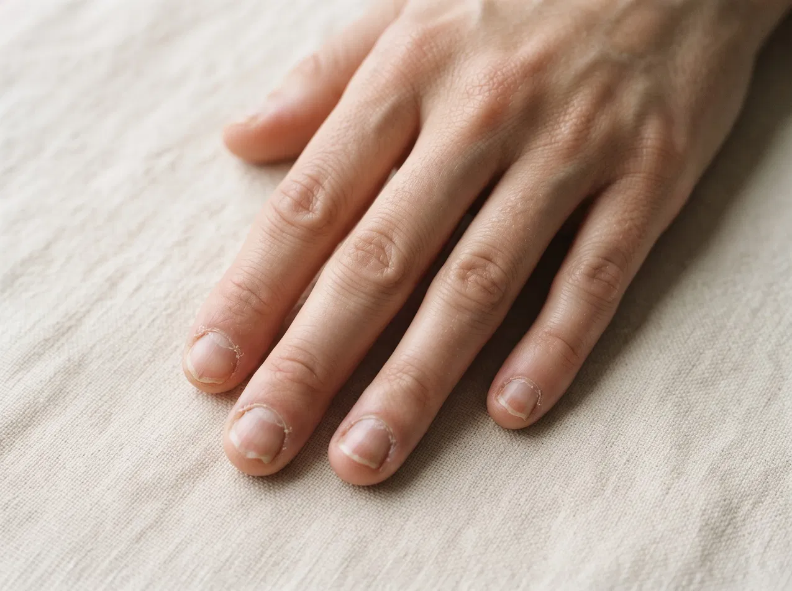
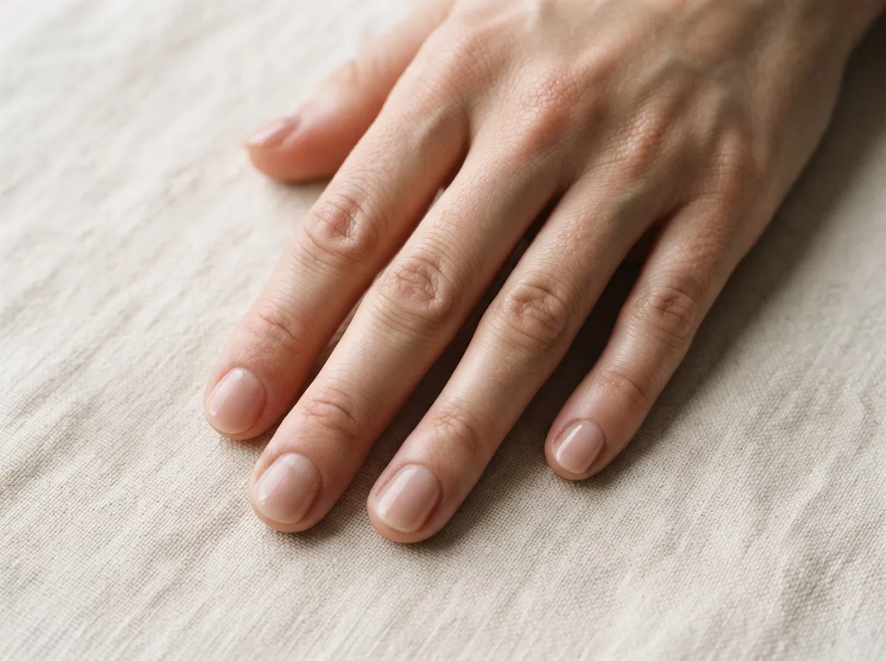
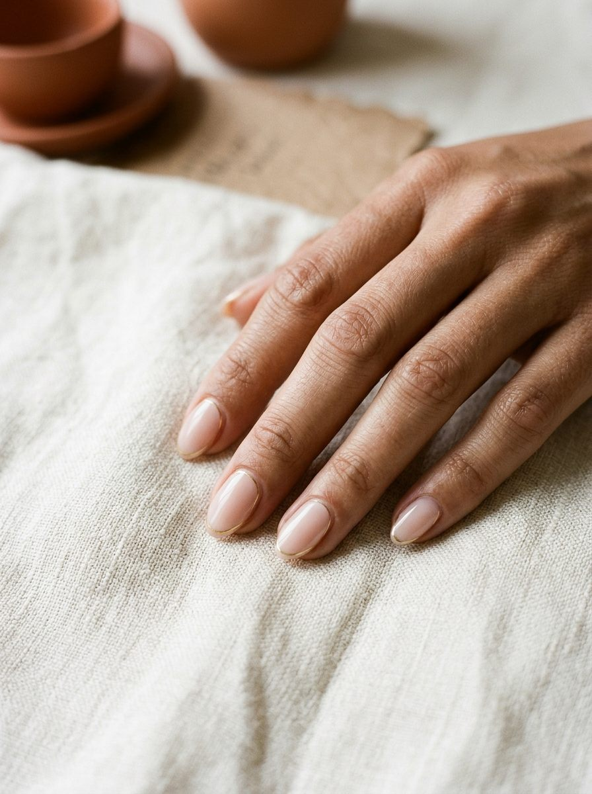
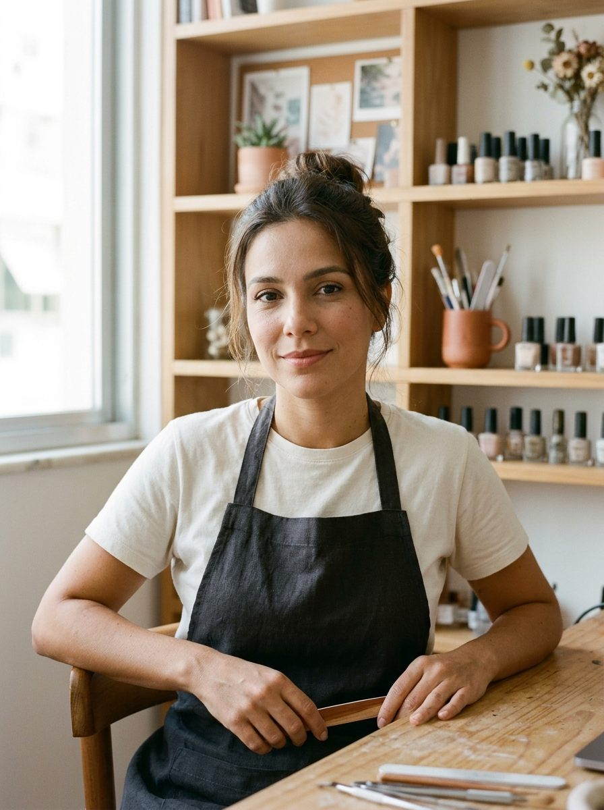

Antes
Depois
‹ ›
Reconstrução e blindagem estruturada
Recuperação de leito ungueal roído e proteção para crescimento saudável.
Nail design autoral em Ipanema. Atendimento com hora marcada, uma cliente por vez.

Unhas roídas, quebradiças ou com alongamento antigo também ganham uma segunda chance.

Camila Duarte · Fundadora do Ateliê Marfim
Faço unhas há sete anos e abri o Ateliê Marfim para trabalhar do jeito que acredito: sem pressa e sem fila de espera. Cada atendimento tem tempo reservado para conversar sobre o que você gosta, desenhar com calma e finalizar com cuidado.
Uso materiais profissionais de marcas reconhecidas, esterilizo todos os alicates e instrumentos em autoclave e descarto o que é descartável na sua frente.
Levei uma foto borrada do Pinterest e ela entendeu exatamente o que eu queria. Durou mais de três semanas sem descolar.
O silêncio do ateliê é um alívio. Você senta, toma um café bom e sabe que aquele tempo é só seu, sem correria de salão comum.
Minha unha era finíssima e quebrava à toa. A blindagem da Camila mudou tudo: natural, sem grossura artificial e impecável.
Atendimento exclusivo com hora marcada em Ipanema. Envie sua mensagem para consultar as datas disponíveis desta semana.
Rua das Hortênsias, 128, sala 204
Ipanema, Rio de Janeiro/RJ, CEP 22410-000
Terça a sábado, das 9h às 19h
(Fecha domingo e segunda)
Somente com hora marcada, em ateliê privativo
(Uma cliente por vez)